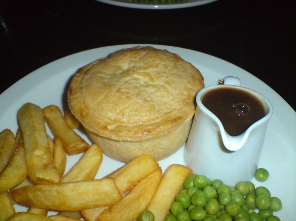

Meat Pie
Poppa kept 3 versions of this dish.
Follow any recipe, mix and match, or use for inspiration for your own version. That's how Poppa did it.
Meat Pie

A spiced meat pie of ground beef and pork with onion, sage, thyme, allspice, and cloves, bound with mashed potatoes and baked in a crust.
Directions
- Cook meats, onion, garlic until all is brown, add spices. Add mashed potatoes to mixture bind all together. Fill pie crust with mixture. Brush top with egg wash bake at 375 degrees for 30-35 minutes until golden brown.
- Cook the hamburger, ground pork, onion, and garlic until all is browned, then add the spices (salt, sage, thyme, allspice, pepper, and ground cloves).
- Add mashed potatoes to the mixture to bind it all together.
- Fill a pie crust with the mixture.
- Brush the top with egg wash. Bake at 375 degrees for 30-35 minutes, until golden brown.
Goes well with
French Meat Pie

Photo: Darren Foreman (CC BY 2.0)
A New England-style tourtiere: ground beef (hamburger) and ground pork simmered with onion, blended with mashed potatoes and allspice, and baked in pie crusts.
Directions
- Cook hamburger and pork with onions, in pot with enough water to cover meat, until all water is evaporated. Allow to cook slowly.
- While resting, boil potatoes and mash. When meat is finished, drain what little water is left, add the potatoes to meat and mix well, adding the spices and salt and pepper.
- Fill prepared pie crusts with meat filling, cut vents in top of crust and coat with milk or egg wash and cook to desired temperature til crust is golden brown. I think that is at 375 degrees.
- Cook the hamburger and pork with the onion in a pot with enough water to cover the meat, until all the water is evaporated. Allow it to cook slowly.
- While that rests, boil the potatoes and mash them.
- When the meat is finished, drain what little water is left, then add the mashed potatoes to the meat and mix well, adding the allspice (or poultry seasoning) and salt and pepper.
- Fill the prepared pie crusts with the meat filling, cut vents in the top of the crust, and coat with milk or egg wash.
- Cook to your desired temperature until the crust is golden brown (the writer suggests about 375 degrees).
Goes well with
French Meat Pie · 2

Photo: Darren Foreman (CC BY 2.0)
A double-crust French-Canadian meat pie of ground beef and ground pork blended with sauteed onion, mashed potato, and allspice, baked until golden.
Directions
- Saute onion. Remove from pan add pork and beef cook till brown. Remove fat. Combine onion, mea, spice, potatoes. Mix well. Fill pie shell, cover with top crust, brush with egg wash. Bake at 375 degrees about 30-35 minutes till crust is golden brown.
- Saute the onion, then remove it from the pan.
- Add the pork and beef and cook till brown. Remove the fat.
- Combine the onion, meat, allspice, and potatoes. Mix well.
- Fill the pie shell, cover with the top crust, and brush with egg wash.
- Bake at 375 degrees about 30 to 35 minutes, till the crust is golden brown.
Goes well with
https://lizotte.cool/recipe/meat-pie.html